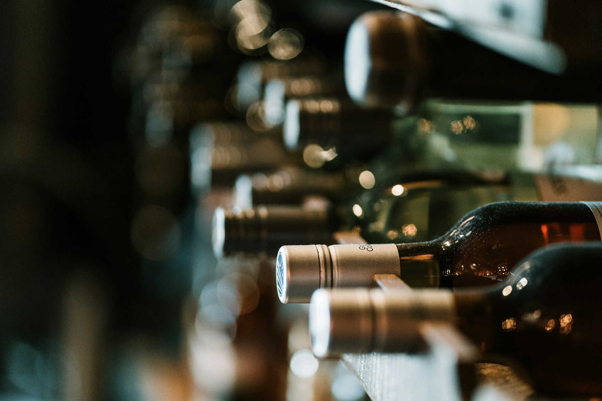
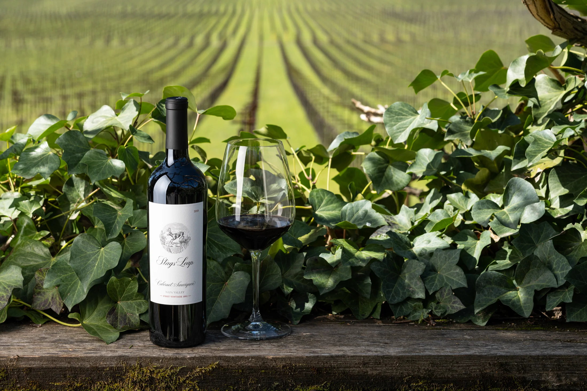
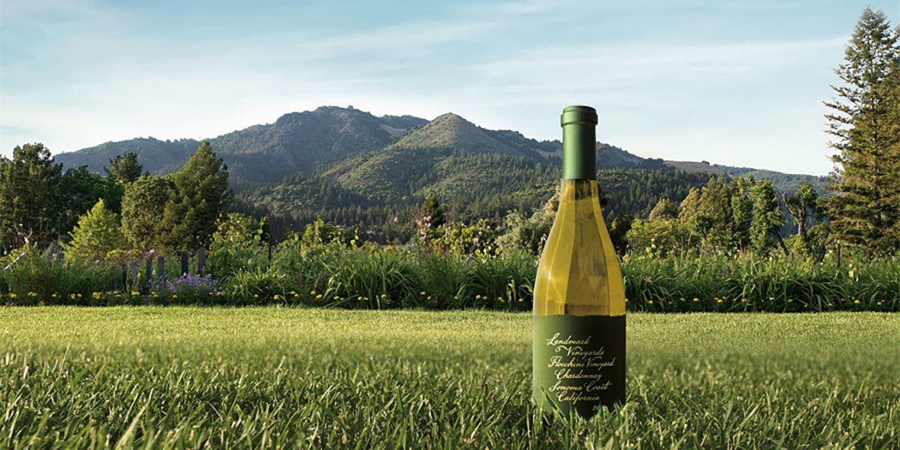

A Vinheria Agnello é uma empresa dedicada à comercialização de diferentes tipos de vinhos, oferecendo uma variedade de produtos que se distinguem por suas características, tipos e safras. Para facilitar a organização e o controle de seus produtos, este projeto apresenta o desenvolvimento de um sistema básico de cadastro de vinhos, criado para auxiliar no gerenciamento das informações relacionadas ao estoque.
A aplicação permite registrar dados importantes, como nome do vinho, tipo, safra e quantidade disponível, utilizando JavaScript para receber, processar e exibir as informações inseridas pelo usuário. Dessa forma, o sistema contribui para uma visualização mais organizada dos produtos cadastrados, facilitando a consulta dos dados e o acompanhamento das quantidades em estoque.
O projeto tem como objetivo aplicar conceitos fundamentais de programação no desenvolvimento de uma solução simples e funcional, demonstrando como a tecnologia pode auxiliar nas atividades de organização e gerenciamento de uma vinheria.


Vinho Tinto
Conhecido por seu sabor intenso e corpo marcante, apresenta características que combinam com carnes vermelhas e pratos de sabor acentuado.

Vinho Branco
Um vinho branco conhecido por suas notas frutadas e sabor equilibrado, que combina com peixes, frutos do mar e pratos leves.